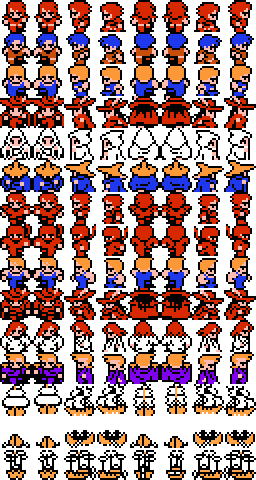

<link rel="import" href="/bower_components/polymer/polymer.html">
<link rel="import" href="../behaviors/ff-canvas-behavior.html">

<dom-module id="ff-char-walking">
  <template>
    <style>
      #sheetContainer {
        display: none;
      }
    </style>
    <canvas id="canvas"></canvas>
    <div id="sheetContainer">
      
    </div>
  </template>

  <script src="../data/ff-char-classes.js"></script>
  <script src="ff-char-walking.js"></script>
</dom-module>